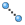

|
|
Main Window — Favorites Toolbar |
This toolbar is intended for you to add your own buttons. It allows you to create a toolbar that has the buttons that you use most frequently, for example.
| Select Select atoms in the Workspace. Double-click to select all atoms. This button has a menu from which you can choose the type of structural unit you want to select. If you select a structural unit from the menu, the button's icon changes to reflect that structural unit (A for atoms, R for residues, etc.). Once you have chosen a structural unit, you can click on an atom in the Workspace and all the atoms in that structural unit are selected. For example, choose Residues and click on an atom. All the atoms in that residue are selected. You can expand the selection to include atoms or entire residues within a specified distance by choosing one of the distance options, and you can include or exclude the picked object in the final selection. You can choose an atom type to select all atoms of that type in the Workspace (e.g. protein backbone). You can choose Select to open the Atom Selection dialog box and specify atoms to select. |
|
| Undo/Redo Menu equivalent: Edit → Undo alias. Keyboard shortcut: Ctrl+Z (⌘Z) Undo or redo the last action. This button changes appearance, depending on the action. |
|
 |
Fit Menu equivalent: View → Fit to Workspace → Selected Atoms. Keyboard shortcut: Z Fit the selected atoms (or all atoms, if there is no selection) to the Workspace. See Fit to Workspace for more information. |
| Measure Menu equivalent: Tools → Measurements → Pick to Measure. Measure distances, angles, dihedrals or NMR coupling constants. This button has a menu from which you can choose between distance, angle, dihedral, or 1H NMR coupling for measurement. This choice is persistent. You can then click on atoms in the Workspace to define the measurement. You can delete measurements from the Workspace using this menu, and you can open Preferences panel to make settings for measurements. For more information on making measurements, see the Measurements Panel topic. |
|
| HBonds Display hydrogen bonds as yellow dotted lines and halogen bonds as purple dotted lines. This button has a menu from which you can choose to whether to display H-bonds and halogen bonds and which of the two you want to display (H-Bonds or Halogen bonds); choose to display them between a ligand and a receptor (Ligand-Receptor), within a ligand (Intra-Ligand), between all molecules (All), or to define the sets of atoms to display hydrogen bonds between (Other). |
|
|  | Contacts Display contacts as light green, orange, or red dotted lines. This button has a menu from which you can choose to whether to display contact and which of them you want to display (Good, Bad, or Ugly); choose to display them between a ligand and a receptor (Ligand-receptor), within a ligand (Intra-Ligand), between all molecules (All), or to define the sets of atoms to display contacts between (Other). |
| Pi Display pi-pi stacking and pi-cation interactions as sky blue and olive green dotted lines between ring centroids or between ring centroids and charged atoms. This button has a menu from which you can choose to whether to display pi interaction and which of the two you want to display (Pi-Pi Stacking or Pi-Cation); choose to display them between a ligand and a receptor (Ligand-Receptor), within a ligand (Intra-Ligand), between all molecules (All), or to define the sets of atoms to display pi interactions between (Other). |
|
| Label All Label all atoms (or target atoms) with the selected label. This button has a menu from which you can select and apply the label, set the current label composition, delete labels, and select an option to reapply the labels when the Workspace changes. The target atom is the first atom in an entry or the Cα atom of a residue if entry or residue properties are used in the label. All atoms are labeled if an atom property is used in the label. |
|